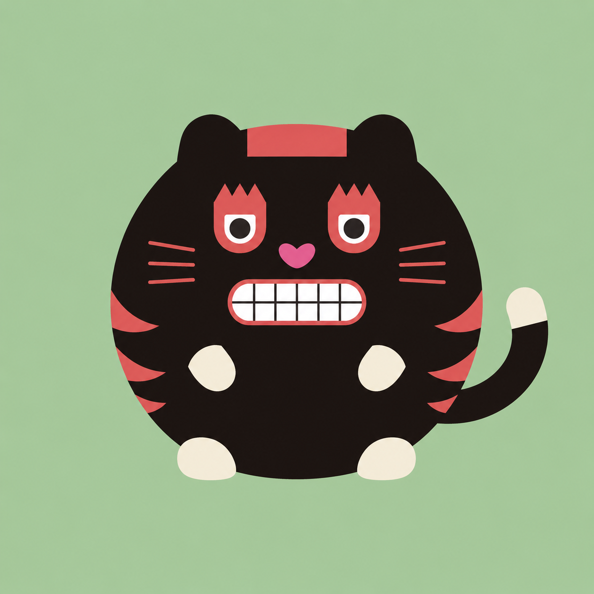

1
觀眾很不一樣
有人只想聽，有問題不敢說出口；有人想要直接開口詢問，甚至拍照問，但傳統語音導覽只能單向播放固定內容。
對應亮點 2
陪觀眾看好展覽，幫館方說好故事。
傳統語音導覽不是不好，而是它很難回應今天觀眾的差異、館方資料的厚度，以及展期中不斷冒出的真實問題。
有人只想聽，有問題不敢說出口；有人想要直接開口詢問，甚至拍照問，但傳統語音導覽只能單向播放固定內容。
策展人整理的訪談、論文、口述史，常常留在資料夾裡，觀眾只看到很小一部分。
觀眾真正反覆追問的展品、人物與事件，過去多半只能靠現場觀察和經驗猜測。
特展結束後，那批用心整理過的知識也跟著收進倉庫，很難成為下一檔展覽的基礎。
展期中想補一段說明、修正一個詞，往往還要等工程師、等版本、等部署。
同一套系統，同時服務三件事：
讓觀眾問得到，讓館方知識活起來，讓後台看見觀眾真正的興趣。
對應痛點，真正有價值的亮點功能。

歡迎來到《新時代大登臺》。我是虎仔，跟你一起逛這場關於「政治低氣壓下的流星」的展覽。
觀眾不是在跟陌生的 AI 工具聊天，而是在跟館方設計的角色互動。語氣、稱呼、開場方式，都能配合展覽與館方品牌。
語音導覽是一段錄音；虎仔則是一個會接話的導覽角色。觀眾問到哪裡，系統就從館方資料裡找根據，再用適合導覽的方式說出來。
語音導覽之後的進化：從「播放」變成「陪逛」觀眾不再是聽完一段前往下一個展項，而是可以自由發問，延伸探索。想安靜地提問可以打字，也可以直接口頭暢問。
同一場展覽，可以長出很多種逛法。系統的任務不是逼觀眾照流程走，而是在不同逛展習慣之間接住他們。
文字、語音、拍照，三種入口都回到同一座館方知識庫蔣渭水這個人物節點，這檔展能用，下一檔關於文協、大稻埕或日治時期社會運動的展也能用。
館員與策展團隊花時間整理好的史實、年代、人物關係與顧問確認內容，不會跟著展覽結束而消失。
每次策展不是消耗資料，而是在累積館方資產哪件展品被問最多次、哪些人物最常被提起、哪個時段互動最熱，後台都能看見。
這不是為了追求漂亮數字，而是幫館方看見內容缺口：觀眾一直問，但我們還沒有準備好回答的地方。
用真實提問修正導覽，也回饋下一檔策展方向## 關於演劇挺身隊
皇民化時期由總督府主導成立的劇團聯盟，表面上是「奉公」的宣傳機制。
[策展詮釋] 本展認為，在「奉公」外衣下，劇人們仍藏著自己的話語想說。
演劇挺身隊合影已發布
民烽紀念照已發布
《閹雞》劇照待審
霧峰演劇草稿
館員可以自己更新策展論述、展品說明與補充資料。展期中發現觀眾一直問某個問題，就能補內容，不必每次等工程師。
內容有草稿、待審、已發布等狀態；改完重新索引，下一位觀眾就能問到更新後的版本。
滾動式修正，不是上線一次就定終身三層知識架構讓 AI 不會把「史實」和「策展詮釋」混在一起，也讓換展時不必推倒重來。
每檔特展自己的故事線、展品說明、策展立場與導覽角色。換展時主要替換這一層。
人物、事件、組織、概念之間的關係，並標注 confidence / stance，讓 AI 知道哪些能直說、哪些要說「本展認為」。
跨展共用的館方知識庫，經過整理後可長期累積、反覆延用。
保留傳統導覽的可靠性，同時補上互動、累積與館方/策展團隊的文史研究轉譯能力。
| 傳統語音導覽 | 一般 AI 聊天工具 | 本系統 | |
|---|---|---|---|
| 會不會亂講話 | 不會因為內容預錄 | 可能會容易用外部知識補空白 | 不會資料庫沒有就說沒有 |
| 能不能聽懂不同問法 | 不能只能照編號聽 | 能能理解語意 | 能文字、語音、照片都能接 |
| 結束後館方留得下東西嗎 | 有限主要留下錄音與文稿 | 不一定不以館方知識資產為核心 | 留得下變成人物、事件、展品節點 |
| 換展要不要重做 | 多半重做錄音、文案、流程重來 | 不適用沒有展覽模組概念 | 只換上層核心歷史層持續延用 |
當系統穩定後，它不只是一檔展覽的 demo，而會變成館方長期累積知識與理解觀眾的基礎設施。
不用從頭再來。這檔展累積的人物、事件、概念節點，下檔特展能直接延用。
不用憑感覺猜。觀眾的提問、停留與互動，能回饋導覽內容與策展方向。
累積下來的結構化知識留在館方，新團隊能從前人的成果上繼續長。